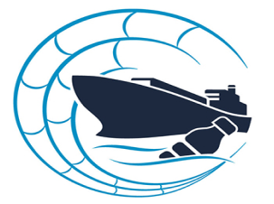
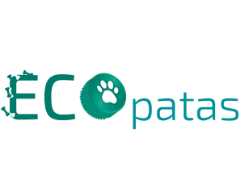
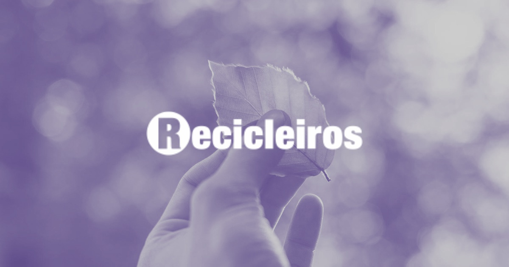

Glolitter: O Projeto de Parcerias GloLitter é uma iniciativa entre o Governo da Noruega, a Organização Marítima Internacional (IMO) e a Organização das Nações Unidas para Agricultura e Alimentação (FAO), com o objetivo de reduzir o lixo marinho. O projeto global apoiará países em desenvolvimento, incluindo Pequenos Estados Insulares em Desenvolvimento (SIDS) e Países Menos Desenvolvidos (LDCs), na identificação de oportunidades para a prevenção e redução do lixo marinho.

ONG Ecopatas: É uma organização sem fins lucrativos que foi fundada em 2018 por Lúcia Fragoso, Nathália Fragoso e Flávia Monteiro. A missão da Ecopatas é promover a sustentabilidade ambiental e a responsabilidade social através de uma atuação que une reciclagem e defesa de animais abandonados.
Eles coletam tampas plásticas e lacres de alumínio, vendem esses resíduos para empresas de reciclagem e usam o dinheiro arrecadado para a castração de animais abandonados. Desde o início da iniciativa, a ONG afirma ter castrado mais de sete mil animais, entre cães, gatos e até coelhos.
A ONG possui 150 pontos de arrecadação espalhados por São Paulo que são atualizados frequentemente e podem ser conferidos nas redes sociais da ONG. Se você quiser ser voluntário, pode entrar em contato com eles através das redes sociais @ecopatas.sp.


Recicleiros: É uma organização no Brasil dedicada a desenvolver inovação e gerar impacto socioambiental com alta eficiência. Eles estão focados em transformar a reciclagem no Brasil e desenvolveram um modelo inovador de coleta seletiva e reciclagem chamado Recicleiros Cidades. Este modelo integra municípios, catadores, empresas e cidadãos em uma cadeia circular. Eles planejam estar em 60 cidades dos 26 estados brasileiros até 2027. Eles também fornecem treinamento para as pessoas trabalharem na indústria de reciclagem.